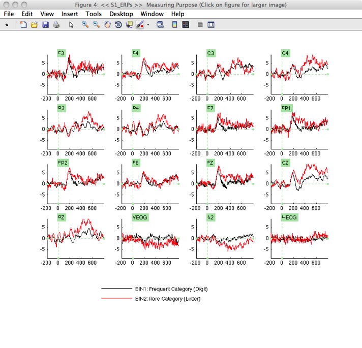
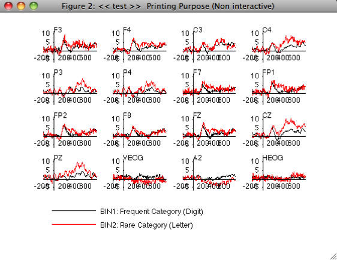
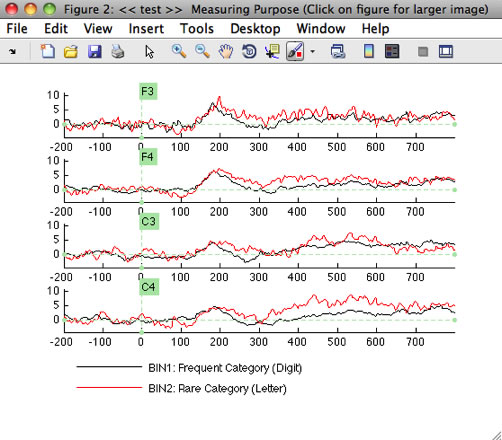

Now that you have created an ERPset, you can look at its contents by selecting ERPLAB > Plot ERP Waveforms, which brings up the window shown in the next screenshot. The top half of the window allows you to specify what information to plot (bins, channels, etc.), and the bottom half allows you to control the details of the plotting (vertical scale, line width, font size, etc.). The window will remember the settings from the last time you used it, but you can revert to the default settings by clicking the RESET VALUES button (e.g., when you want to plot a new ERPset that has a different epoch length, set of channels, etc.).
Hint: Do not try to select a new ERPset while the plotting GUI window is open. The plotting window only knows about the ERPset that was active when the window was first opened. We will eventually change this window so that you can select among ERPsets from the plotting GUI. For now, you must close the plotting GUI, select a new ERPset, and again select ERPLAB > Plot ERP Waveforms.
Click the PLOT button with the default values, and you should see a window pop up like the one shown below. At present, ERPLAB will create a separate panel for each scalp site and overlay the selected channels. In a future version, we will make this more flexible so that you can plot multiple ERPsets and choose which waveforms are overlaid and which waveforms are shown in different panels. For now, you can save the waveforms in a PDF file (by clicking the PDF button), import them into a graphics program such as Adobe Illustrator, and then edit them. We recommend that you maximize the figure window before clicking the PDF button. Alternatively, you can export the waveforms as text files using the ERPLAB > Export ERP to Text routines and then read them into a program such as Excel or Deltagraph for plotting.
Equivalent Script Command:
%Plotting Averaged ERP Waveform
%Bins to plot [1,2], Channels to plot [1:16],
%Pre Baseline Correction, Rows 4, Columns 4, Channels 10, Legends 10
%Line width 1, Time range [-200 798],
pop_ploterps( ERP, [ 1, 2],1:16 , 'AutoYlim', 'on', 'Axsize', [ 0.05 0.08], 'BinNum', 'on', 'Blc', 'pre', 'Box', [ 4 4], 'ChLabel', 'on', 'FontSizeChan',10, 'FontSizeLeg',10, 'LegPos', 'bottom', 'Linespec', {'k-' , 'r-' }, 'LineWidth',1, 'Maximize', 'on','Position', [ 102.833 9.375 108.667 35.125], 'Style', 'Matlab', 'xscale', [ -200.0 798.0 -100:170:750], 'YDir', 'normal', 'yscale', [ -10.0 10.0 -10:5:10] );
%To plot bins 1 and 2, channels 1-16, with default parameters, use this:
pop_ploterps( ERP, [ 1, 2],1:16);

Note that, when Include Toolbar on Figure is checked in the plotting GUI, ERPLAB uses a standard Matlab plotting routine that provides a set of menus and a toolbar in the plotting window. Play around with it and you should be able to figure out how it works. Perhaps the most useful tool is the measurement tool (the icon with the small plus mark), which allows you to click on the waveform and see the X and Y values (time and voltage) at that point on the waveform. In addition, this mode allows you to click on one of the panels (e.g., the panel for the Cz electrode site), which will pop up a new window showing an expanded version of that panel, as shown in the screenshot below.

If Interactive plot window is not checked, then these features are not present. In this mode, however, the X axis is plotted at zero microvolts rather than at the bottom of each panel, which is the appropriate way to plot the waveforms for publications and formal presentations. Try plotting the data again with Interactive plot window unchecked; the result should look like the screenshot below.

There are many things you can do with the Plotting Waveform GUI. For example, you could plot a single column with multiple channels. For example, set Channels to plot to 1:4, set Row(s) to 4, and set Column(s) to 1. You will see something like this:

Also, try checking the Topographic checkbox to create something like the following screenshot. There are w (width) and h (height) parameters that you can used to adjust the width and height of each waveform within the figure.

At present, it is possible to overlay the waveforms from different bins within the same ERPset, but there is no way to overlay the waveforms from different ERPsets (e.g., overlaying grand averages for two groups of subjects, with each group's grand average waveforms in a separate ERPset). To accomplish this, you can append the bins from one ERPset onto the end of the other ERPset using ERPLAB > Append ERPsets. The data from both ERPsets will then be separate bins in a single ERPset, making it possible to plot them.
| <<Averaging | Table of Contents | Filtering>> |